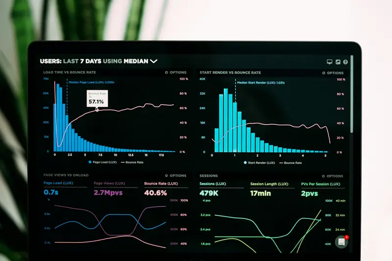
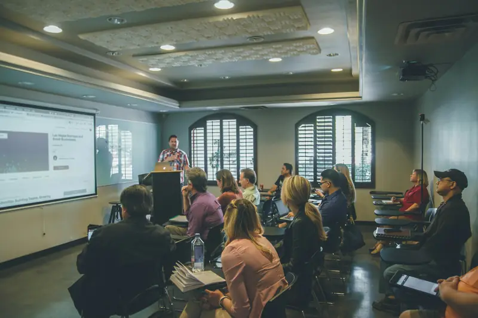

Eight kinds of academic work, one standard.
Every service comes with a fixed quote, a fixed delivery date, a Turnitin similarity report, an AI-detection report and seven days of free revisions.

01 / 08
Assignment writing
Send the question and the marking rubric, and the assignment is planned against the criteria your examiner will actually use. Each section is built from academic sources, referenced in the style your module handbook asks for, and read by an editor before it reaches you.
Business reports, reflective essays, literature-based essays, lab-style reports and portfolio tasks are all covered, including assignments with practical components such as calculations, diagrams or short presentations.
- Structure mapped to the learning outcomes and marking rubric
- Harvard, APA 7, IEEE, OSCOLA, MLA, Chicago or your institute's house style
- Tables, figures, appendices and word count formatted to the brief
- Turnitin similarity report and AI-detection report
- Seven days of free revisions against the original brief
02 / 08
Thesis & dissertation
A dissertation is a long project, so we run it like one: an agreed outline, chapter-by-chapter delivery on a timetable you can plan around, and a revision round after every supervisor meeting.
You stay in control of the direction. We explain the choices behind the methodology and the analysis, so you can defend every chapter in your own words when the viva comes.
- Topic refinement and research proposal
- Literature review built on a synthesis matrix of recent sources
- Methodology, sampling and questionnaire or interview design
- Findings, discussion, conclusion and recommendations
- Viva and defence question bank with model answers

03 / 08
Research & data analysis
Whether you are starting with a blank questionnaire or a spreadsheet of responses, we design, run and write up the analysis your study needs, in the format your chapter four is expected to follow.
Every analysis is delivered with the raw output files and a short walk-through, so you understand what each test shows and why it was chosen.
- Questionnaire, interview guide and sampling plan
- Reliability, descriptive, correlation, regression, t-test and ANOVA
- Thematic analysis for interviews and open-ended answers
- Tables and charts written up to APA presentation standards
- A walk-through call so you can explain every result
04 / 08
Journal articles & papers
Turning a dissertation into a paper, or writing a review article from scratch, takes a different discipline from coursework. We work to the target journal's scope, word limits and template from the first draft.
Support continues after submission: we help you read reviewer comments, revise the manuscript and prepare a point-by-point response letter.
- Journal or conference shortlisting by scope and indexing
- IMRaD structure, abstract and keywords
- Formatting to the publisher's template and reference style
- Cover letter for the editor
- Response-to-reviewers letter and revisions

05 / 08
Presentations
A good academic deck says less than the report and shows more. We turn your content into a clear sequence of slides — one idea per slide, real charts instead of bullet lists, and your university template where one is required.
Speaker notes are written to your time slot, so you know exactly what to say on every slide and where the questions are likely to come.
- Storyline and slide outline agreed before design
- Custom charts, diagrams and icons
- Speaker notes timed to your presentation slot
- Your university's template or a clean ArtSpark design
- Likely panel questions with suggested answers
06 / 08
Case study analysis
Case studies reward analysis, not description. We identify the core problem in the case, apply the frameworks your module teaches, and build recommendations that follow from the evidence.
Where the case concerns a Sri Lankan company or sector, we bring in local data and context so the analysis reads as current and grounded.
- Problem statement and key issues
- SWOT, PESTEL, Five Forces, VRIO, Ansoff, BCG or Balanced Scorecard
- Financial ratio and trend analysis where the case provides figures
- Evidence-based recommendations and an implementation plan
- Turnitin and AI-detection reports
07 / 08
Academic coaching
Some parts of a degree you have to own yourself — the viva, the presentation, the exam. Coaching sessions focus on exactly those, at your pace, online at a time that suits you.
Sessions are practical: we work through your own draft, your own data or your own slides, and you leave each one with clear next steps.
- Research methodology and statistics tutoring
- Academic writing, structure and critical analysis
- Mock viva and presentation rehearsal with feedback
- Study planning for long projects
- Sessions in English or Sinhala
08 / 08
Editing & proofreading
Already written your draft? We polish it: language and grammar, paragraph flow, argument structure, and a full check of in-text citations against the reference list.
If your similarity score is too high, we rewrite the flagged passages properly — paraphrasing with correct citation — and show you every change in tracked mode.
- Language, grammar and academic tone
- Structure and argument flow
- Citation and reference-list correction
- Similarity reduction with tracked changes
- Formatting to your institute's guidelines
The same four promises, whatever you order.
Plagiarism free
Written from source material for your brief, checked digitally and read by a proofreader before it leaves us. Similarity stays low, and the report proves it.
Always on time
The delivery date and time are fixed in your quote. We turn work down rather than miss a deadline — that is the whole point of choosing us.
Free Turnitin & AI report
Every delivery includes a similarity report and an AI-detection report. You never take our word for it, and you never pay extra for the proof.
100% confidential
Your name, university and documents are never shown to anyone. Writers see the brief, not you, and files are deleted on request.
Not sure which service fits? Send the brief and we'll advise.
Photograph the question, tell us the deadline, and we reply with a fixed price and a delivery time. No payment until you agree to both.